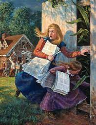
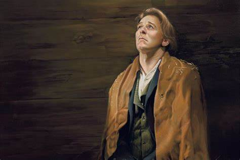

Early in Missouri
The people of Jackson County Missouri were not very welcoming of the early saints. Through the summer of 1833, small mobs had been vandalizing the property of saints in the area in an attempt to make them leave. They even burned down their houses and haystacks. The saints tried their best to connect with the people in the area, but it seemed like everything they did offended the Missourians. Hundreds of the residents of Jackson County singed a petition saying they would drive the saints from Jackson County by any means necessary.
 The Rollins girls save the revelationsSoon after, men attacked the printing press of the church. They destroyed the equipment and planned on destroying the newly published Book of Commandments. Two young girls, Mary and Caroline Rollins, decided to risk their lives to save those holy revelations. They grabbed the revelations and ran. The men destroying the printing press saw them and tried to chase them. If they would have found them they might have killed the young girls. By a miracle of the Lord, they didn’t find them.
Missouri Mormon War
When Joseph Smith received the revelation to leave Ohio, the saints began to gather in Far West, Missouri in large numbers. The residents of Jackson County drove the saints out of that county, so they moved to Far West, a neighboring county. The church had been persecuted heavily over the last several years and felt ready to defend itself. Sidney Rigdon gave a powerful speech on the 4th of July 1838 and stated that, although the saint wouldn’t be the aggressors, they would defend their rights to the death.
The conflict broke out on Election Day in Gallatin Missouri. As a small group of saints went to the town square to cast their votes, William Peniston, a candidate for state representative began to speak against the church and its leaders. The saints did not come to fight. They simply wanted to vote. Out of nowhere a man tried to punch one of the saints. Even though they were heavily outnumbered the saints were determined to protect each other. They defeated the mob of angry men and went home without voting.
Joseph knew this would cause more conflict and tried to meet with some local leaders to make peace. The peace he made didn’t last very long. People throughout the area began to meet and discuss what to do about the Latter-day Saint problem. They all wanted the saints to leave their state, and began to resort to violence to bring that desire to pass. Joseph wrote to Governor Boggs in an attempt to get help. Governor Boggs was unwilling to help the prophet. Joseph Smith realized the law would no longer be able to help them. The church was ready to defend themselves or die in the attempt.
The saints and the people of Missouri had an unfortunate encounter on the banks of the Crooked River. Some of the men of the saints saw some armed men of Missouri. They shouted at each other for a few seconds then a battle broke out. The battle didn’t last long. There were a few people who were injured or killed. After the fight, an exaggerated report of the battle was sent to Governor Boggs. He had no way to know what was true, but he had enough evidence to take action against the Church of Latter-day Saints. He then issued the famous Extermination Order, which gave permission to force any member of the Church of Jesus Christ of Latter-day Saints to leave Missouri dead or alive.
A small group of saints was gathered at Hawn’s Mill, a small settlement in Caldwell County. They felt that this was a safe place to be, even with the newly issued Extermination Order. They were wrong. A group of armed men were descending on the settlement. The women ran away, and the men and boys entered the blacksmith shop to make a stand against the ensuing mob. They were trapped. The men of the mob circled the shop and shot them all from close range. Many men and boys were killed that day. Soon after, Joseph Smith was imprisoned in Liberty Jail. The saints had to go through this terrible time without their prophet and leader by their side.
 Joseph in Liberty JailAlthough it was a very difficult time for Joseph and all the saints, the time Joseph spent in Liberty Jail led to some of his most profound revelations and teachings. In one of these revelations the Lord taught Joseph about passing through trials. He said in D&C 121:7-8: “My son, peace be unto thy soul; thine adversity and thine afflictions shall be but a small moment; And then, if thou endure it well, God shall exalt thee on high; thou shalt triumph over all thy foes.” Trials are hard, but we learn from a revelation from Jesus Christ that we can have peace in these difficult times and victory in the eternities.